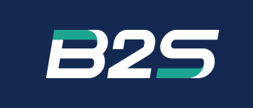

7가지 단계별 예제로 배우는 EGrabber SDK
본 문서의 모든 내용(텍스트, 도표, 코드 예제, 디자인, 구조)은 B2S Co., Ltd. (이하 “B2S”) 의 지적 자산입니다. 저작권법 및 관련 법률에 따라 보호되며, 무단으로 복제·수정·배포·공개할 수 없습니다.
본 문서는 B2S 가 고객사에 제공하는 학습 및 참고 자료입니다. 다음 행위는 사전 서면 동의 없이 금지됩니다:
본 문서는 기밀 자료 로 취급되며, 수령자는 합리적인 보안 조치를 통해 외부 유출을 방지할 의무가 있습니다. 문서 폐기 시에는 안전한 방법으로 처리해야 합니다.
본 문서에서 다루는 Euresys eGrabber SDK 의 저작권은 Euresys s.a. 에 있습니다. SDK 자체의 라이선스 조항은 Euresys 의 별도 계약을 따릅니다. 본 문서는 SDK 의 사용 예시를 학습 목적으로 정리한 자료입니다.
본 문서의 코드 예제와 가이드는 학습 자료로 제공됩니다. 실제 운영 시스템에 적용할 경우 고객사 환경에 맞는 별도 검증 이 필요하며, 본 문서의 직접·간접 사용으로 발생하는 결과에 대해 B2S 는 별도 약정이 없는 한 책임을 지지 않습니다.
본 가이드는 Euresys eGrabber .NET SDK 를 C# / .NET 6 환경에서 사용하는 7가지 학습 예제를 단계별로 소개합니다. 각 예제는 하나의 핵심 개념을 격리하여 보여주며, 점진적으로 복잡도가 증가하는 구조입니다. 마지막 예제는 검사 시스템에서 활용 가능한 파이프라인 패턴 예시를 시연합니다.
| 번호 | 프로젝트 | 형태 | 핵심 패턴 | 학습 포인트 |
|---|---|---|---|---|
| 01 | HelloEgrabber | Console | Discovery | 물리 보드 / 채널 / 카메라 구분 |
| 02 | SimpleGrab | Console | 폴링 (Polling) | ScopedBuffer 동기 그랩 |
| 03 | CallbackGrab | Console | 콜백 (Callback) | RegisterEventCallback + ProcessEventsAsync |
| 04 | MultiCamera | Console | 다중 카메라 | 카메라당 클래스 + 인스턴스 메서드 콜백 |
| 05 | CameraParameters | Console | GenICam | 파라미터 읽기 / 쓰기 + Helper 패턴 |
| 06 | DisplayWithOpenCV | WinForms | 실시간 디스플레이 | 30Hz 타이머 + 단일 슬롯 + 비트맵 풀 |
| 07 | InspectionPipeline | WinForms | 검사 파이프라인 예시 | 콜백 + 검사 스레드 + 디스플레이 워커 + 히스토그램 |
01 → 02 → 03 순서로 진행하시는 것을 권장합니다. 01에서 SDK 의 발견(Discovery) 메커니즘을 이해하고, 02 에서 가장 단순한 그랩 패턴을 익힌 뒤, 03 에서 콜백 모델로 확장합니다. 04 는 OOP 관점에서 객체별 상태 분리를, 05 는 카메라 파라미터 제어를 다룹니다. 06 부터는 WinForms 환경에서 실시간 디스플레이를 다루며, 마지막 07 에서 검사 시스템 통합의 한 가지 예시 구조를 학습합니다.
| 운영체제 | Windows 10 / 11 (x64) |
| 아키텍처 | x64 (Coaxlink DMA 정렬 요구사항) |
| 개발 환경 | Visual Studio 2022 (또는 그 이상), .NET 데스크톱 워크로드 설치 |
| .NET SDK | .NET 6 SDK (콘솔 샘플) / .NET 6 + WindowsDesktop (06, 07) |
| Euresys eGrabber | 26.04 이상 권장 (EGrabber.NET.dll 제공) |
| 하드웨어 | Coaxlink / Grablink 보드 (또는 PlayLink 시뮬레이터) |
Visual Studio Installer 에서 다음 워크로드가 설치되어 있어야 합니다:
샘플 06 (DisplayWithOpenCV) 과 07 (InspectionPipeline) 은 픽셀 포맷 변환(BGR8) 과 다운스케일 처리를 위해 OpenCvSharp4 를 사용합니다. OpenCvSharp4 는 .NET 에서 OpenCV 를 사용할 수 있게 해주는 래퍼 라이브러리입니다.
| NuGet 패키지 | 권장 버전 | 역할 |
|---|---|---|
OpenCvSharp4 |
4.9.0.20240103 |
OpenCV 4.9.0 의 .NET API 바인딩 (관리 코드) |
OpenCvSharp4.runtime.win |
4.9.0.20240103 |
Windows 용 네이티브 바이너리 (DLL) |
두 패키지의 버전 번호는 반드시 일치해야 합니다. 일치하지 않으면 런타임에 DLL 로드 오류가 발생합니다.
각 프로젝트의 .csproj 에 다음과 같이 명시되어 있습니다:
<ItemGroup>
<PackageReference Include="OpenCvSharp4" Version="4.9.0.20240103" />
<PackageReference Include="OpenCvSharp4.runtime.win" Version="4.9.0.20240103" />
</ItemGroup>
Linux/macOS 용 별도 패키지(OpenCvSharp4.runtime.ubuntu.20.04-x64 등) 도 있지만,
본 샘플은 Windows x64 전용이므로 runtime.win 만 사용합니다.
솔루션 루트의 Directory.Build.props 파일이 eGrabber 설치 경로를 다음 우선순위로 자동 탐지합니다:
EGrabberDir (수동 지정)EGRABBER_DIR (Euresys 인스톨러가 자동 설정)C:\Program Files\Euresys\eGrabber모든 빌드와 실행은 Visual Studio 2022 이상 에서 진행한다고 가정합니다.
EuresysSamples.sln 선택 후 열기또는 탐색기에서 EuresysSamples.sln 파일을 더블클릭하면 Visual Studio 가 자동으로 실행됩니다.
Visual Studio 상단 툴바에서 다음 두 가지를 확인합니다:
Release (개발 중에는 Debug 가능)x64 (필수)Any CPU 로 설정하면 빌드는 가능하지만 SDK 의 64비트 native DLL 과 호환되지 않아 실행 시 오류가 발생합니다. 반드시 x64 로 설정하세요.
처음 솔루션을 열면 Visual Studio 가 자동으로 NuGet 패키지를 복원합니다. 수동 복원이 필요한 경우:
빌드 결과는 출력 창 (Output Window) 에 표시되며, "빌드: 성공 7, 실패 0" 처럼 나오면 정상입니다.
실행할 프로젝트를 선택합니다:
01_HelloEgrabber) 우클릭설정된 시작 프로젝트는 굵은 글씨로 표시됩니다.
| 단축키 / 메뉴 | 동작 |
|---|---|
| F5 | 디버그 시작 (디버거 부착) |
| Ctrl + F5 | 디버그하지 않고 시작 (빠른 실행, 콘솔 창이 자동 닫히지 않음) |
| 디버그 → 시작 | F5 와 동일 |
"Press any key to exit..." 메시지로 키 입력 대기"PlayLink" 가 표시되면 시뮬레이터 모드입니다.
PC 에 장착된 Coaxlink 보드와 연결된 카메라를 SDK 가 어떻게 발견하는지 확인합니다. 물리 보드, 카메라 채널, 카메라 디바이스를 명확히 구분하여 표시합니다.
EGenTL 생성 → EGrabberDiscovery.Discover() 호출 → 결과 조회InterfaceCount 로 물리 보드 수, GrabberCount 로 채널 수 확인1) Trying to detect a real Coaxlink board... ======================================== Scan with Coaxlink ======================================== interfaces : 1 (physical boards) egrabbers : 2 (camera channels) cameras : 2 [interface #0] PC3623 - Coaxlink Quad CXP-12 Value (2-camera, line-scan) - KQV00696 [egrabber #0] Device0 on PC3623 - ... - KQV00696 (VL-16K3.5X2-C60I-2) [egrabber #1] Device1 on PC3623 - ... - KQV00696 (VL-16K3.5X2-C60I-2) [camera #0] [camera #1] --- First grabber details --- Interface ID : PC3623 - Coaxlink Quad CXP-12 Value (2-camera, line-scan) - KQV00696 Device ID : Device0 Camera : VIEWORKS VL-16K3.5X2-C60I-2 Width x Height: 16384 x 1 PixelFormat : Mono8
using (var gentl = new EG.EGenTL(EG.CtiPath.Coaxlink))
using (var discovery = new EG.EGrabberDiscovery(gentl))
{
discovery.Discover();
Console.WriteLine($"interfaces : {discovery.InterfaceCount}");
Console.WriteLine($"egrabbers : {discovery.GrabberCount}");
Console.WriteLine($"cameras : {discovery.CameraCount}");
for (int i = 0; i < discovery.InterfaceCount; i++)
{
var ifInfo = discovery.GetInterfaceInfo(i);
Console.WriteLine($" [interface #{i}] {ifInfo.InterfaceID}");
}
for (int i = 0; i < discovery.GrabberCount; i++)
{
var info = discovery.EGrabbers[i];
Console.WriteLine($" [egrabber #{i}] {info.DeviceID} on {info.InterfaceID}");
}
}InterfaceID 가 동일하면 같은 물리 보드의 다른 채널입니다. 예를 들어 Coaxlink Quad CXP-12 (2-camera) 모델은 4개의 CXP 링크를 2채널로 묶어 사용합니다.
콜백 없이 N장의 영상을 동기적으로 받아오는 가장 기본 그랩 패턴입니다.
ScopedBuffer 의 RAII 동작과 SDK 의 동기 API 사용법을 다룹니다.
ReallocBuffers(N) — DMA 버퍼 사전 할당Start(frameCount, controlRemoteDevice) — N장 그랩 시작 + 자동 정지ScopedBuffer — RAII 패턴으로 프레임 수신 + 자동 큐 반환GetInfo<T>() — 프레임 메타정보(타임스탬프, 크기, FID, 포인터) 조회grabber.ReallocBuffers(BufferCount);
grabber.Start(FramesToGrab, true);
for (int i = 0; i < FramesToGrab; i++)
{
using (var buf = new EG.ScopedBuffer(grabber, 1000ul))
{
IntPtr base_ = buf.GetInfo<IntPtr>(EG.BUFFER_INFO_CMD.BUFFER_INFO_BASE);
ulong ts = buf.GetInfo<ulong> (EG.BUFFER_INFO_CMD.BUFFER_INFO_TIMESTAMP);
ulong fid = buf.GetInfo<ulong> (EG.BUFFER_INFO_CMD.BUFFER_INFO_FRAMEID);
ulong size = buf.GetInfo<ulong> (EG.BUFFER_INFO_CMD.BUFFER_INFO_SIZE);
Console.WriteLine($"Frame {i+1} | FID={fid} | size={size} B | ts={ts} us");
}
}Producer : Coaxlink Grabber opened - VL-16K3.5X2-C60I-2 (16384 x 1) Grab started (requesting 10 frames) Frame 1 | FID= 0 | size= 640000 B | ts=12345 us | base=0x7FF8A1B20000 Frame 2 | FID= 1 | size= 640000 B | ts=12378 us | base=0x7FF8A1B20000 ... (8 more frames) Grab complete
BufferCount = 4 — DMA 버퍼 개수 (높은 fps 일수록 크게)FramesToGrab = 10 — 받을 프레임 수new ScopedBuffer(grabber, 1000ul) — 1000ms 타임아웃 (필요 시 조정)새 프레임이 도착할 때마다 SDK 가 콜백 함수를 자동 호출하는 비동기 패턴입니다. 람다 대신 별도 메서드를 등록하여 가독성·디버깅·재사용성을 확보했습니다.
RegisterEventCallback<NewBufferData>(OnNewBuffer) — 콜백 메서드 등록EnableEvent(EventType.NewBufferData) — 이벤트 종류 활성화ProcessEventsAsync — Euresys 공식 권장 비동기 이벤트 펌프Interlocked.Increment(ref counter) — 락 없이 원자적 카운터 증가CancellationTokenSource — 안전한 작업 취소// 클래스 필드로 카운터 보관 (콜백 + 메인이 공유)
private static long received = 0;
// 별도 메서드로 콜백 로직 분리
private static void OnNewBuffer(EG.EGrabber g, EG.NewBufferData data)
{
using (var buf = new EG.ScopedBuffer(g, data))
{
ulong fid = buf.GetInfo<ulong>(EG.BUFFER_INFO_CMD.BUFFER_INFO_FRAMEID);
ulong size = buf.GetInfo<ulong>(EG.BUFFER_INFO_CMD.BUFFER_INFO_SIZE);
long n = Interlocked.Increment(ref received);
Console.WriteLine($"[callback] frame {n} | FID={fid} | size={size} B");
}
}grabber.RegisterEventCallback<EG.NewBufferData>(OnNewBuffer);
grabber.EnableEvent(EG.EventType.NewBufferData);
grabber.ReallocBuffers(BufferCount);
grabber.Start(); // 무한 그랩
var cts = new CancellationTokenSource();
var task = grabber.ProcessEventsAsync(EG.EventType.NewBufferData, cts.Token);
// 메인은 N장 받을 때까지 폴링
while (Interlocked.Read(ref received) < FramesToGrab)
Thread.Sleep(10);
cts.Cancel();
task.Wait();
grabber.Stop();config-rg.js — 카메라/보드 초기 설정 스크립트 (없으면 기본값 사용)OnNewBuffer 내부 — 실제 검사 코드를 이 함수에 추가BufferCount — 콜백 처리 속도에 맞춰 조정
여러 대의 카메라를 동시에 그랩하는 패턴입니다. 카메라 1대 분량의 상태와 동작을
CameraUnit 클래스로 묶고, N개의 인스턴스를 만들어 병렬 그랩합니다.
IDisposable 직접 구현 — using 문 호환Count 필드만 증가List<CameraUnit> + foreach — 컬렉션 일괄 제어internal sealed class CameraUnit : IDisposable
{
public int CameraIndex { get; }
public string ModelName { get; }
public long Count; // Interlocked 카운터
private readonly EG.EGrabber _grabber;
private readonly CancellationTokenSource _cts = new();
private Task _task = Task.CompletedTask;
public CameraUnit(EG.EGrabberCameraInfo info, int idx)
{
CameraIndex = idx;
_grabber = new EG.EGrabber(info);
try { ModelName = _grabber.Remote.Get<string>("DeviceModelName"); }
catch { ModelName = "(unknown)"; }
_grabber.RegisterEventCallback<EG.NewBufferData>(OnNewBuffer);
_grabber.EnableEvent(EG.EventType.NewBufferData);
_grabber.ReallocBuffers(4ul);
}
private void OnNewBuffer(EG.EGrabber g, EG.NewBufferData data)
{
using (var buf = new EG.ScopedBuffer(g, data))
Interlocked.Increment(ref Count); // 이 객체의 Count 만 증가
}
public void Start() { _grabber.Start(); _task = _grabber.ProcessEventsAsync(...); }
public void Stop() { _cts.Cancel(); _task.Wait(); _grabber.Stop(); }
public void Dispose() => _grabber.Dispose();
}
콜백 메서드를 인스턴스 메서드 로 만들면, 메서드 안의 Count 는 자동으로
"내가 속한 객체의 Count" 를 가리킵니다. 카메라 2대면 각자 자기 카운터만 증가합니다.
Producer : Coaxlink Physical boards : 1 Cameras found : 2 [cam 0] VL-16K3.5X2-C60I-2 [cam 1] VL-16K3.5X2-C60I-2 Starting grab for 5 seconds --- Results --- cam 0 (VL-16K3.5X2-C60I-2 ) : 36 frames (7.2 fps) cam 1 (VL-16K3.5X2-C60I-2 ) : 2878 frames (575.6 fps)
GenICam 표준에 따른 카메라 파라미터 읽기/쓰기 방법을 학습합니다. Width / Height / PixelFormat / ExposureTime / Gain / TriggerMode 등의 노드를 다룹니다.
| 호출 | 용도 |
|---|---|
grabber.Remote.Get<string>("PixelFormat") | Enum 노드 읽기 |
grabber.Remote.Get<long>("Width") | 정수 노드 읽기 |
grabber.Remote.Get<double>("ExposureTime") | 실수 노드 읽기 |
grabber.Remote.Set<string>("TriggerMode", "Off") | Enum 노드 쓰기 |
grabber.Remote.Set<long>("OffsetX", 0) | 정수 노드 쓰기 |
grabber.Remote.Set<double>("Gain", 1.0) | 실수 노드 쓰기 |
private static void TrySetString(EG.EGrabber g, string name, string v)
{
try { g.Remote.Set<string>(name, v);
Console.WriteLine($" setString {name} = \"{v}\" OK"); }
catch (Exception e) {
Console.WriteLine($" setString {name} = \"{v}\" FAIL ({e.Message})"); }
}
// 사용
TrySetString (g, "PixelFormat", "Mono8");
TrySetInteger(g, "OffsetX", 0);
TrySetFloat (g, "ExposureTime", 5000.0);
TrySetString (g, "TriggerMode", "Off");라인스캔 / 고정 ROI 카메라에서 임의 해상도를 거부하는 경우, 현재 값을 읽어 동일하게 set 하는 패턴:
try
{
long curWidth = g.Remote.Get<long>("Width");
long curHeight = g.Remote.Get<long>("Height");
TrySetInteger(g, "Width", curWidth);
TrySetInteger(g, "Height", curHeight);
}
catch (Exception e)
{
Console.WriteLine($" Width/Height read failed: {e.Message}");
}private static void Dump(EG.EGrabber g, string name)
{
try { Console.WriteLine($" {name,-22} = {g.Remote.Get<string>(name)}"); return; } catch {}
try { Console.WriteLine($" {name,-22} = {g.Remote.Get<long>(name)}"); return; } catch {}
try { Console.WriteLine($" {name,-22} = {g.Remote.Get<double>(name)}"); return; } catch {}
Console.WriteLine($" {name,-22} = (n/a)");
}WinForms 윈도우에 실시간 영상을 표시하는 첫 번째 GUI 샘플입니다. 고속 그랩에서도 화면이 깜빡이거나 끊기지 않도록 비트맵 풀, 단일 슬롯 핸드오프, 30Hz 타이머 등의 패턴을 적용했습니다.
| 상단 — VideoPanel | 실시간 영상 (커스텀 Control) |
| 하단 — Control Panel | Start / Stop 버튼, FPS / Resolution / MB·s / Status 라벨 |
// 그랩 루프 (별도 스레드)
while (!ct.IsCancellationRequested)
{
using var buf = new EG.ScopedBuffer(_grabber, 500ul);
var bi = buf.GetInfo();
int w = (int)bi.Width, h = (int)bi.DeliveredHeight;
// 백프레셔 — UI가 이전 프레임 안 가져갔으면 변환 스킵
if (Volatile.Read(ref _latestBitmap) == null)
{
using var conv = buf.Convert("BGR8", ...);
var (dw, dh) = ComputeDisplaySize(w, h); // 최대 960px
var bmp = _pool.Rent(dw, dh);
var bmpData = bmp.LockBits(...);
using var src = new Mat(h, w, MatType.CV_8UC3, conv.Pixels);
using var dst = new Mat(dh, dw, MatType.CV_8UC3, bmpData.Scan0, bmpData.Stride);
Cv2.Resize(src, dst, new Size(dw, dh), 0, 0, InterpolationFlags.Area);
bmp.UnlockBits(bmpData);
var old = Interlocked.Exchange(ref _latestBitmap, bmp);
if (old != null) _pool.Return(old);
}
// Stats 는 항상 갱신 (백프레셔로 비트맵 스킵돼도 라벨은 살아있음)
Interlocked.Exchange(ref _latestStats, new NodeStats(...));
}검사 시스템에서 활용 가능한 4단계 파이프라인 패턴 의 한 가지 예시입니다. 그랩 콜백은 최소한의 일만 하고 즉시 리턴하며, 검사와 디스플레이는 각자의 전용 스레드에서 처리합니다. 이렇게 분리하면 검사 시간과 디스플레이 부하가 서로 영향을 주지 않습니다.
SDK DMA 버퍼 수 (BufferCount) 와 검사 큐 용량 (InspectionQueueCapacity) 은
검사 처리 시간이 길수록, 그랩 fps 가 높을수록 더 많이 필요합니다.
검사 중 SDK 큐가 비지 않도록 충분한 in-flight 버퍼를 확보하는 것이 핵심 개념입니다.
본 샘플은 BufferCount = 16, InspectionQueueCapacity = 16 을 기본값으로 제공합니다.
Inspect() 메서드 본문에 검사 코드를 추가하시면 됩니다. SDK 인프라(스레드/큐/버퍼)는 손대지 않아도 됩니다.
private unsafe void Inspect(EG.ScopedBuffer buf)
{
var basePtr = buf.GetInfo<IntPtr>(EG.BUFFER_INFO_CMD.BUFFER_INFO_BASE);
ulong size = buf.GetInfo<ulong> (EG.BUFFER_INFO_CMD.BUFFER_INFO_SIZE);
int w = (int)buf.GetInfo<ulong>(EG.BUFFER_INFO_CMD.BUFFER_INFO_WIDTH);
int h = (int)buf.GetInfo<ulong>(EG.BUFFER_INFO_CMD.BUFFER_INFO_DELIVERED_HEIGHT);
// OpenCV Mat 으로 wrap (메모리 복사 없음 — SDK 버퍼를 그대로 참조)
using var mat = new Mat(h, w, MatType.CV_8UC1, basePtr);
// ── 여기에 사용자 검사 알고리즘 ──
// 예) ROI 평균 / 결함 검출 / 패턴 매칭 / OCR / NG·OK 판정
}본 샘플은 사용자 검사 코드 자리에 256-bin 8-bit 히스토그램을 계산하는 예제를 포함합니다. 검사 스레드가 raw pixel pointer 에서 직접 분포를 계산하고, 결과를 우측 패널에 30Hz 로 표시합니다.
안전한 정리를 위해 다음 순서로 처리합니다:
_grabber.Stop() — 새 콜백 발생 차단_cts.Cancel() — 이벤트 펌프 + 디스플레이 워커 종료 신호await _eventTask — SDK 가 큐에 남은 콜백 모두 처리_inspectionQueue.CompleteAdding() — 검사 스레드 자연 종료await _inspectionTask, await _displayTask — 모든 워커 완료 대기| 증상 | 원인 / 해결 |
|---|---|
EGrabber.NET.dll 을 찾을 수 없음 |
Euresys eGrabber 인스톨러로 설치, 또는 Directory.Build.props 의 EGrabberDir 경로 확인 |
| NuGet 패키지 복원 실패 | 솔루션 우클릭 → "NuGet 패키지 복원" 수동 실행. 네트워크 / 프록시 확인 |
Any CPU 빌드 후 실행 시 오류 |
솔루션 플랫폼을 x64 로 변경하고 다시 빌드 |
| OpenCvSharp 관련 오류 | NuGet 복원 누락 — 솔루션 빌드 후에도 발생 시 솔루션 정리(Clean) → 재빌드 |
| 증상 | 원인 / 해결 |
|---|---|
No grabber found |
보드 미장착 — PlayLink 시뮬레이터로 자동 폴백 됨. PlayLink 도 실패하면 SDK 재설치 확인 |
| 그랩이 시작되지만 프레임이 안 옴 | 카메라 전원 / 케이블 / 트리거 신호 확인. config-rg.js 누락 가능성 |
| F5 실행 후 콘솔 창이 즉시 닫힘 | Ctrl + F5 (디버그하지 않고 시작) 사용 |
| 증상 | 원인 / 해결 |
|---|---|
| 화면이 깜빡임 (샘플 06, 07) | OptimizedDoubleBuffer 플래그 누락 / OnPaintBackground 미오버라이드 — 코드에 이미 적용되어 있음 |
| FPS 가 카메라 설정값보다 낮음 | SDK 버퍼 부족 가능성. BufferCount 를 늘려서 확인 |
| 드롭 카운트 지속 증가 (샘플 07) | 검사 처리 시간이 1/fps 보다 김. 검사 알고리즘 최적화 또는 큐 크기 조정 필요 |
| 메모리 사용량 계속 증가 | 비트맵 풀 반환 누락 / ScopedBuffer Dispose 누락 가능성. using 블록 확인 |
| X 닫기 시 멈춤 | 워커 스레드가 종료 신호 미수신 — CancellationToken 체크 빈도 확인 |
| BufferLost 이벤트 발생 | SDK 큐 오버플로우 가능성. 콜백을 더 가볍게 만들거나 버퍼 수 조정 |
using var gentl = new EG.EGenTL(EG.CtiPath.Coaxlink); // 또는 Playlink
using var discovery = new EG.EGrabberDiscovery(gentl);
discovery.Discover();
using var grabber = new EG.EGrabber(discovery.EGrabbers[0]);grabber.Remote.Get<string>("PixelFormat");
grabber.Remote.Get<long>("Width");
grabber.Remote.Get<double>("ExposureTime");
grabber.Remote.Set<string>("TriggerMode", "Off");grabber.ReallocBuffers(N); // DMA 버퍼 N개
grabber.Start(); // 무한 그랩
grabber.Start(N, true); // N장 후 자동 정지
grabber.Stop(); // 명시적 정지using var buf = new EG.ScopedBuffer(grabber, timeoutMs);
ulong fid = buf.GetInfo<ulong>(EG.BUFFER_INFO_CMD.BUFFER_INFO_FRAMEID);
ulong ts = buf.GetInfo<ulong>(EG.BUFFER_INFO_CMD.BUFFER_INFO_TIMESTAMP);
IntPtr base_ = buf.GetInfo<IntPtr>(EG.BUFFER_INFO_CMD.BUFFER_INFO_BASE);
ulong size = buf.GetInfo<ulong>(EG.BUFFER_INFO_CMD.BUFFER_INFO_SIZE);grabber.RegisterEventCallback<EG.NewBufferData>(OnNewBuffer);
grabber.EnableEvent(EG.EventType.NewBufferData);
grabber.ReallocBuffers(N);
grabber.Start();
var cts = new CancellationTokenSource();
var task = grabber.ProcessEventsAsync(EG.EventType.NewBufferData, cts.Token);
// ... 작업 ...
cts.Cancel();
task.Wait();
grabber.Stop();using var conv = buf.Convert(
"BGR8",
EG.IMAGE_CONVERT_OUTPUT_CONFIG.IMAGE_CONVERT_OUTPUT_CONFIG_DEFAULT,
EG.IMAGE_CONVERT_OUTPUT_OPERATION.IMAGE_CONVERT_OUTPUT_OPERATION_COPY,
0);
IntPtr pixels = conv.Pixels;
int w = (int)conv.Width;
int h = (int)conv.Height;// 픽셀 메모리 복사 없이 SDK 버퍼를 그대로 봄
using var mat = new Mat(h, w, MatType.CV_8UC1, basePtr); // Mono8
using var mat = new Mat(h, w, MatType.CV_8UC3, basePtr); // BGR8 / RGB8BUFFER_INFO_BASE | 픽셀 데이터 시작 포인터 (IntPtr) |
BUFFER_INFO_SIZE | 버퍼 크기 (바이트, ulong) |
BUFFER_INFO_WIDTH | 가로 픽셀 수 (ulong) |
BUFFER_INFO_DELIVERED_HEIGHT | 실제 전달된 세로 픽셀 수 (ulong) |
BUFFER_INFO_FRAMEID | 프레임 순번 (ulong, 0 부터 시작) |
BUFFER_INFO_TIMESTAMP | 타임스탬프 (us, ulong) |
BUFFER_INFO_PIXELFORMAT | 픽셀 포맷 코드 (ulong) |
본 문서에 관한 문의 사항은 위 연락처로 연락 주시기 바랍니다.
© 2026 B2S Co., Ltd. All Rights Reserved.